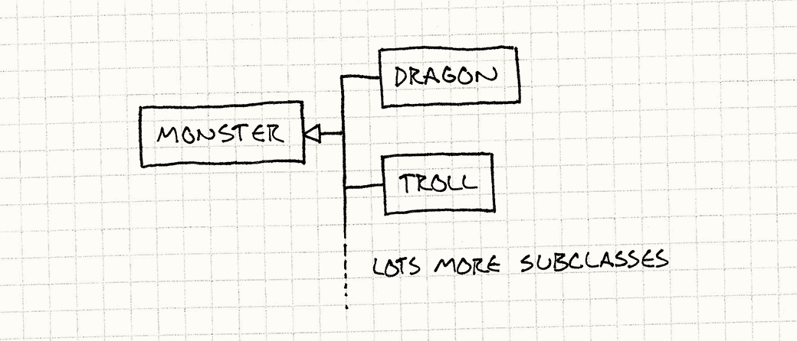

Type Object
Game Programming PatternsBehavioral Patterns
Intent
Allow the flexible creation of new “classes” by creating a single class, each instance of which represents a different type of object.
Motivation
Imagine we’re working on a fantasy role-playing game. Our task is to write the code for the hordes of vicious monsters that seek to slay our brave hero. Monsters have a bunch of different attributes: health, attacks, graphics, sounds, etc., but for example purposes we’ll just worry about the first two.
Each monster in the game has a value for its current health. It starts out full, and each time the monster is wounded, it diminishes. Monsters also have an attack string. When the monster attacks our hero, that text will be shown to the user somehow. (We don’t care how here.)
The designers tell us that monsters come in a variety of different breeds, like “dragon” or “troll.” Each breed describes a kind of monster that exists in the game, and there can be multiple monsters of the same breed running around in the dungeon at the same time.
The breed determines a monster’s starting health: dragons start off with more than trolls, making them harder to kill. It also determines the attack string: all monsters of the same breed attack the same way.
The typical OOP answer
Given that game design, we fire up our text editor and start coding. According
to the design, a dragon is a kind of monster, a troll is
another kind, and so on with the other breeds. Thinking object-oriented, that
leads us to a Monster base class:
class Monster { public: virtual ~Monster() {} virtual const char* getAttack() = 0; protected: Monster(int startingHealth) : health_(startingHealth) {} private: int health_; // Current health. };
The public getAttack() function lets the combat code get the string that
should be displayed when the monster attacks the hero. Each derived breed class
will override this to provide a different message.
The constructor is protected and takes the starting health for the monster. We’ll have derived classes for each breed that provide their own public constructors that call this one, passing in the starting health that is appropriate for that breed.
Now let’s see a couple of breed subclasses:
class Dragon : public Monster { public: Dragon() : Monster(230) {} virtual const char* getAttack() { return "The dragon breathes fire!"; } }; class Troll : public Monster { public: Troll() : Monster(48) {} virtual const char* getAttack() { return "The troll clubs you!"; } };
Each class derived from Monster passes in the starting health, and overrides
getAttack() to return the attack string for that breed. Everything works as
expected, and before long we’ve got our hero running around slaying a variety of
beasties. We keep slinging code, and before we know it, we’ve got dozens of
monster subclasses, from acidic slimes to zombie goats.
Then, strangely, things start to bog down. Our designers ultimately want to have hundreds of breeds, and we find ourselves spending all of our time writing these little seven line subclasses and recompiling. It gets worse: the designers want to start tuning the breeds we’ve already coded. Our formerly productive work day degenerates to:
-
Get email from designer asking to change health of troll from 48 to 52.
-
Check out and change
Troll.h. -
Recompile game.
-
Check in change.
-
Reply to email.
-
Repeat.
We spend the day frustrated because we’ve turned into data monkeys. Our designers are frustrated because it takes them forever just to get a simple number tuned. What we need is the ability to change breed stats without having to recompile the whole game every time. Even better, we’d like designers to be able to create and tune breeds without any programmer intervention at all.
A class for a class
At a very high level, the problem we’re trying to solve is pretty simple. We have a bunch of different monsters in the game, and we want to share certain attributes between them. A horde of monsters are beating on the hero, and we want some of them to use the same text for their attack. We define that by saying that all of those monsters are the same “breed,” and that the breed determines the attack string.
We decided to implement this concept using inheritance, since it lines up with
our intuition of classes: A dragon is a monster, and each dragon in the game is
an instance of this dragon “class.” Defining each breed as a subclass of an
abstract base Monster class, and having each monster in the game be an
instance of that derived breed class mirrors that. We end up with a class
hierarchy like this:

Each instance of a monster in the game will be of one of the derived monster types. The more breeds we have, the bigger the class hierarchy. That’s the problem of course: adding new breeds means adding new code, and each breed has to be compiled in as its own type.
This works, but it isn’t the only option. We could also architect our code so
that each monster has a breed. Instead of subclassing Monster for each
breed, we have a single Monster class and a single Breed class:

That’s it. Two classes. Notice that there’s no inheritance at all. With this
system, each monster in the game is simply an instance of class Monster. The
Breed class contains the information that’s shared between all monsters of the
same breed: starting health and the attack string.
To associate monsters with breeds, we give each Monster instance a reference
to a Breed object containing the information for that breed. To get the attack
string, a monster just calls a method on its breed. The Breed class
essentially defines a monster’s “type.” Each breed instance is an object that
represents a different conceptual type, hence the name of the pattern: Type
Object.
What’s especially powerful about this pattern is that now we can define new types of things without complicating the codebase at all: we’ve essentially lifted a portion of the type system out of the hard-coded class hierarchy into data we can define at runtime.
We can create hundreds of different breeds just by instantiating more instances
of Breed with different values. If we create breeds by initializing them from
data read from some configuration file, we have the ability to define new types
of monsters completely in data. So easy, a designer could do it!
The Pattern
Define a type object class and a typed object class. Each type object instance represents a different logical type. Each typed object stores a reference to the type object that describes its type.
Instance-specific data is stored in the typed object instance, and data or behavior that should be shared across all instances of the same conceptual type is stored in the type object. Objects referencing the same type object will function as if they were the same type. This lets us share data and behavior across a set of similar objects, much like subclassing lets us do, but without having a fixed set of hard-coded subclasses.
When to Use It
This pattern is useful anytime you need to define a variety of different “kinds” of things, but baking the kinds into your language’s type system is too rigid. In particular, it’s useful when either of these are true:
-
You don’t know what types you will need up front. (For example, what if our game needed to support downloading content that contained new breeds of monster?)
-
You want to be able to modify or add new types without having to recompile or change code.
Keep in Mind
This pattern is about moving the definition of a “type” from the imperative but rigid language of code into the more flexible but less behavioral world of objects in memory. The flexibility is good, but you lose some things by hoisting your types into data.
The type objects have to be tracked manually
One advantage of using something like C++’s type system is that the compiler handles all of the bookkeeping for the classes automatically. The data that defines each class is automatically compiled into the static memory segment of the executable and just works.
With the Type Object pattern, we are now responsible for managing not only our monsters in memory, but also their types: we have to make sure all of the breed objects are instantiated and kept in memory as long as our monsters need them. Whenever we create a new monster, it’s up to us to ensure that it’s correctly initialized with a reference to a valid breed.
We’ve freed ourselves from some of the limitations of the compiler, but the cost is we have to re-implement some of what it used to be doing for us.
It’s harder to define behavior for each type
With subclassing, you can override a method and do whatever you want to: calculate values procedurally, call other code, etc. The sky is the limit. We could define a monster subclass whose attack string changed based on the phase of the moon if we wanted to. (Handy for werewolves, I suppose.)
When we use the Type Object pattern instead, we replace an overridden method with a member variable. Instead of having monster subclasses that override a method to calculate an attack string using different code, we have a breed object that stores an attack string in a different variable.
This makes it very easy to use type objects to define type-specific data, but hard to define type-specific behavior. If, for example, different breeds of monster needed to use different AI algorithms, using this pattern becomes more challenging.
There are a couple of ways we can get around this limitation. A simple solution is to have a fixed set of pre-defined behaviors, and then use data in the type object to simply select one of them. For example, let’s say our monster AI will always be either “stand still”, “chase hero”, or “whimper and cower in fear” (hey, they can’t all be mighty dragons). We can define functions to implement each of those behaviors. Then we can associate an AI algorithm with a breed by simply having it store a pointer to the appropriate function.
Another more powerful solution is to actually support defining behavior completely in data. The Interpreter, and Bytecode patterns both let us build objects that represent behavior. If we read in a data file and use that to create a data structure for one of these patterns, we’ve moved the behavior’s definition completely out of code and into content.
Sample Code
For our first pass at an implementation, let’s start simple and build the basic
system described in the motivation section. We’ll start with the Breed
class:
class Breed { public: Breed(int health, const char* attack) : health_(health), attack_(attack) {} int getHealth() { return health_; } const char* getAttack() { return attack_; } private: int health_; // Starting health. const char* attack_; };
Very simple. It’s basically just a container for two data fields: the starting health and the attack string. Let’s see how monsters use it:
class Monster { public: Monster(Breed& breed) : health_(breed.getHealth()), breed_(breed) {} const char* getAttack() { return breed_.getAttack(); } private: int health_; // Current health. Breed& breed_; };
When we construct a monster, we give it a reference to a breed object. This
defines the monster’s breed instead of the subclasses we were previously using.
In the constructor, Monster uses the breed to determine its starting health.
To get the attack string, the monster simply forwards the call to its breed.
This very simple chunk of code is the core idea of the pattern. Everything from here on out is bonus.
Making type objects more like types: constructors
With what we have now, we construct a monster directly and are responsible for passing in its breed. This is a bit backwards from how regular objects are instantiated in most OOP languages: we don’t usually allocate a blank chunk of memory and then give it its class. Instead, we call a constructor function on the class itself, and it’s responsible for giving us a new instance.
We can apply this same pattern to our type objects:
class Breed { public: Monster* newMonster() { return new Monster(*this); } // Previous Breed code... };
And the class that uses them:
class Monster { friend class Breed; public: const char* getAttack() { return breed_.getAttack(); } private: Monster(Breed& breed) : health_(breed.getHealth()), breed_(breed) {} int health_; // Current health. Breed& breed_; };
The key difference is the newMonster() function in
Breed. That’s our “constructor” factory method. With our original
implementation, creating a monster looked like:
Monster* monster = new Monster(someBreed);
After our changes, it’s like this:
Monster* monster = someBreed.newMonster();
So, why do this? There are two steps to creating an object: allocation and
initialization. Monster’s constructor lets us do all of the
initialization we need. In our example, that’s only storing the breed, but a
full game would be loading graphics, initializing the monster’s AI, and doing
other set-up work.
However, that all happens after allocation. We’ve already got a chunk of memory to put our monster into before its constructor is called. In games, we often want to control that aspect of object creation too: we’ll typically use things like custom allocators or the Object Pool pattern to control where in memory our objects end up.
Defining a “constructor” function in Breed gives us a place to put that logic.
Instead of simply calling new, the newMonster function can pull the memory
from a pool or custom heap before passing control off to Monster for
initialization. By putting this logic inside Breed, in the only function
that has the ability to create monsters, we ensure that all monsters go through
the memory management scheme we want.
Sharing data through inheritance
What we have so far is a perfectly serviceable type object system, but it’s pretty basic. Our game will eventually have hundreds of different breeds, each with dozens of attributes. If a designer wants to tune all of the thirty different breeds of troll to make them a little stronger, she’s got a lot of tedious data entry ahead of her.
What would help is the ability to share attributes across multiple breeds in the same way that breeds let us share attributes across multiple monsters. Just like we did with our original OOP solution, we can solve this using inheritance. Only, this time, instead of using our language’s inheritance mechanism, we’ll implement it ourselves within our type objects.
To keep things simple, we’ll just support single inheritance. In the same way that a class can have a parent base class, we’ll allow a breed to have a parent breed:
class Breed { public: Breed(Breed* parent, int health, const char* attack) : parent_(parent), health_(health), attack_(attack) {} int getHealth(); const char* getAttack(); private: Breed* parent_; int health_; // Starting health. const char* attack_; };
When we construct a breed, we give it a parent that it inherits from. We can
pass in NULL for a base breed that has no ancestors.
To make this useful, a child breed needs to control which attributes are
inherited from its parent and which it overrides and specifies itself. For our
example system, we’ll say that a breed overrides the monster’s health by having
a non-zero value, and overrides the attack by having a non-NULL string.
Otherwise, the attribute will be inherited from its parent.
There are two ways we can implement this. One is to handle the delegation dynamically, every time the attribute is requested, like this:
int Breed::getHealth() { // Override. if (health_ != 0 || parent_ == NULL) return health_; // Inherit. return parent_->getHealth(); } const char* Breed::getAttack() { // Override. if (attack_ != NULL || parent_ == NULL) return attack_; // Inherit. return parent_->getAttack(); }
This has the advantage of doing the right thing if a breed is modified at runtime to no longer override, or no longer inherit some attribute. On the other hand, it takes a bit more memory (it has to retain a pointer to its parent), and it’s slower. It has to walk the inheritance chain each time you look up an attribute.
If we can rely on a breed’s attributes not changing, a faster solution is to apply the inheritance at construction time. This is called “copy-down” delegation because we copy inherited attributes down into the derived type when it’s created. It looks like this:
Breed(Breed* parent, int health, const char* attack) : health_(health), attack_(attack) { // Inherit non-overridden attributes. if (parent != NULL) { if (health == 0) health_ = parent->getHealth(); if (attack == NULL) attack_ = parent->getAttack(); } }
Note that we no longer need a field for the parent breed. Once the constructor is done, we can forget the parent since we’ve already copied all of its attributes in. To access a breed’s attribute, now we just return the field:
int getHealth() { return health_; } const char* getAttack() { return attack_; }
Nice and fast!
Let’s say our game engine is set up to create the breeds by loading a JSON file that defines them. It could look like:
{ "Troll": { "health": 25, "attack": "The troll hits you!" }, "Troll Archer": { "parent": "Troll", "health": 0, "attack": "The troll archer fires an arrow!" }, "Troll Wizard": { "parent": "Troll", "health": 0, "attack": "The troll wizard casts a spell on you!" } }
We’d have a chunk of code that reads each breed entry and instantiates a new
breed instance with its data. As you can see from the "parent": "Troll"
fields, the Troll Archer and Troll Wizard breeds inherit from the base
Troll breed.
Since both of them have zero for their health, they’ll inherit it from the base
Troll breed instead. This means now our designer can tune the health in
Troll and all three breeds will be updated. As the number of breeds and the
number of different attributes each breed has increases, this can be a big
time-saver. Now, with a pretty small chunk of code, we have an open-ended system
that puts control in our designer’s hands and makes the best use of their time.
Meanwhile, we can get back to coding other features.
Design Decisions
The Type Object pattern lets us build a type system as if we were designing our own programming language. The design space is wide open, and we can do all sorts of interesting stuff.
In practice, a few things curtail our fancy. Time and maintainability will discourage us from anything particularly complicated. More importantly, whatever type object system we design, our users (often non-programmers) will need to be able to easily understand it. The simpler we can make it, the more usable it will be. So what we’ll cover here is the well-trodden design space, and we’ll leave the far reaches for the academics and explorers.
Is the Type Object encapsulated or exposed?
In our sample implementation, Monster has a reference to a breed, but it
doesn’t publicly expose it. Outside code can’t get directly at the monster’s
breed. From the codebase’s perspective, monsters are essentially typeless, and
the fact that they have breeds is an implementation detail.
We can easily change this and allow Monster to return its Breed:
class Monster { public: Breed& getBreed() { return breed_; } // Existing code... };
Doing this changes the design of Monster. The fact that all monsters have
breeds is now a publicly-visible part of its API. There are benefits with either
choice.
-
If the type object is encapsulated:
-
The complexity of the Type Object pattern is hidden from the rest of the codebase. It becomes an implementation detail that only the typed object has to worry about.
-
The typed object can selectively override behavior from the type object. Let’s say we wanted to change the monster’s attack string when it’s near death. Since the attack string is always accessed through
Monster, we have a convenient place to put that code:const char* Monster::getAttack() { if (health_ < LOW_HEALTH) { return "The monster flails weakly."; } return breed_.getAttack(); }
If outside code was calling
getAttack()directly on the breed, we wouldn’t have the opportunity to insert that logic. -
We have to write forwarding methods for everything the type object exposes. This is the tedious part of this design. If our type object class has a large number of methods, the object class will have to have its own methods for each of the ones that we want to be publicly visible.
-
-
If the type object is exposed:
-
Outside code can interact with type objects without having an instance of the typed class. If the type object is encapsulated, there’s no way to use it without also having a typed object that wraps it. This prevents us, for example, from using our constructor pattern where new monsters are created by calling a method on the breed. If users can’t get to breeds directly, they wouldn’t be able to call it.
-
The type object is now part of the object’s public API. In general, narrow interfaces are easier to maintain than wide ones: the less you expose to the rest of the codebase, the less complexity and maintenance you have to deal with. By exposing the type object, we widen the object’s API to include everything the type object provides.
-
How are typed objects created?
With this pattern, each “object” is now a pair of objects: the main object and the type object it uses. So how do we create and bind the two together?
-
Construct the object and pass in its type object:
- Outside code can control allocation. Since the calling code is constructing both objects itself, it can control where in memory that occurs. If we want our objects to be usable in a variety of different memory scenarios (different allocators, on the stack, etc.) this gives us the flexibility to do that.
-
Call a “constructor” function on the type object:
- The type object controls memory allocation. This is the other side of the coin. If we don’t want users to choose where in memory our objects are created, requiring them to go through a factory method on the type object gives us control over that. This can be useful if we want to ensure all of our objects come from a certain Object Pool or other memory allocator.
Can the type change?
So far, we’ve presumed that once an object is created and bound to its type object that that binding will never change. The type an object is created with is the type it dies with. This isn’t strictly necessary. We could allow an object to change its type over time.
Let’s look back at our example. When a monster dies, the designers tell us sometimes they want its corpse to become a reanimated zombie. We could implement this by spawning a new monster with a zombie breed when a monster dies, but another option is to simply get the existing monster and change its breed to a zombie one.
-
If the type doesn’t change:
-
It’s simpler both to code and to understand. At a conceptual level, “type” is something most people probably will not expect to change. This codifies that assumption.
-
It’s easier to debug. If we’re trying to track down a bug where a monster gets into some weird state, it simplifies our job if we can take for granted that the breed we’re looking at now is the breed the monster has always had.
-
-
If the type can change:
-
There’s less object creation. In our example, if the type can’t change, we’ll be forced to burn CPU cycles creating a new zombie monster, copying over any attributes from the original monster that need to be preserved, and then deleting it. If we can simply change the type, all that work gets replaced by a simple assignment.
-
We need to be careful that assumptions are met. There’s a fairly tight coupling between an object and its type. For example, a breed might assume that a monster’s current health is never above the starting health that comes from the breed.
If we allow the breed to change, we need to make sure that the new type’s requirements are met by the existing object. When we change the type, we will probably need to execute some validation code to make sure the object is now in a state that makes sense for the new type.
-
What kind of inheritance is supported?
-
No inheritance:
-
It’s simple. Simplest is often best. If you don’t have a ton of data that needs sharing between your type objects, why make things hard on yourself?
-
Can lead to duplicated effort. I’ve yet to see an authoring system where designers didn’t want some kind of inheritance. When you’ve got fifty different kinds of elves, having to tune their health by changing the same number in fifty different places sucks.
-
-
Single inheritance:
-
It’s still relatively simple. It’s easy to implement, but, more importantly, it’s also pretty easy to understand. If non-technical users are going to be working with the system, the fewer moving parts, the better. There’s a reason a lot of programming languages only support single inheritance. It seems to be a sweet spot between power and simplicity.
-
Looking up attributes is slower. To get a given piece of data from a type object, we may now need to walk up the inheritance chain to find the type that ultimately decides the value. If we’re in performance critical code, we may not want to spend time on this.
-
-
Multiple inheritance:
-
Almost all data duplication can be avoided. With a good multiple inheritance system, users can build a hierarchy for their type objects that has almost no redundancy. When it comes time to tune numbers, we can avoid a lot of copy and paste.
-
It’s complex. Unfortunately, the benefits for this seem to be more theoretical than practical. Multiple inheritance is hard to understand and reason about.
If our Zombie Dragon type inherits both from Zombie and Dragon, which attributes come from Zombie and which come from Dragon? In order to use the system, users will need to understand how the inheritance graph is traversed and have the foresight to design an intelligent hierarchy.
-
Most C++ coding standards I see today tend to ban multiple inheritance, and Java and C# lack it completely. That’s an acknowledgement of a sad fact: it’s so hard to get it right that it’s often best to not use it at all. While it’s worth thinking about, it’s rare that you’ll want to use multiple inheritance for the type objects in your games. As always, simpler is better.
-
See Also
-
The high-level problem this pattern addresses is sharing data and behavior between several objects. Another pattern that addresses the same problem in a different way is Prototype.
-
There’s a lot of similarity between this pattern and the State pattern. Both patterns let an object delegate part of what defines itself to another object. With a Type Object, we’re usually delegating what the object is: invariant data that broadly describes the object. With State, we delegate what an object is right now: temporal data that describes an object’s current configuration.
When we discussed having an object change its type, you can look at that as having our Type Object serve double duty as a State too.